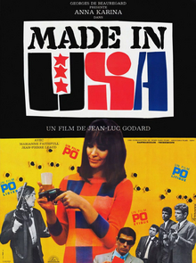

Made In U.S.A.

Jean-Luc Godard
1966
90 minutes
Wikipedia link
IMDB link
This is text.
Time to choose something different:
- I do love films with a strong young lady as protagonist! - Turn to section 122
- I like Godard's "Weekend" better. Show me something with more despicable people, some clowning around, and a bit of cannibalism! - Turn to section 56
- Travel seems like a pain and inconvenience. They could have avoided a lot of this mess if they had just stayed in Paris. - Turn to section 142